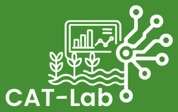

CAT-Lab

CAT- Lab è un progetto che si propone come un Living Lab per promuovere l'innovazione sostenibile nell'agricoltura delle aree marginali costiere. In un contesto di crescente pressione ambientale e necessità di gestione sostenibile delle risorse naturali, CAT-Lab intende integrare avanzate soluzioni di Internet of Things (IoT) per ottimizzare la gestione agricola nella produzione di prodotti orticoli in aree vulnerabili, affrontando specifiche sfide legate all’incremento di salinità delle acque sotterranee e alla variabilità delle risorse idriche.
Attraverso l'installazione di sensori IoT nei campi, il progetto permetterà la raccolta continua di dati su parametri critici come l'umidità del suolo, le condizioni meteorologiche e la concentrazione di nutrienti.
Il progetto adotta un approccio olistico e multidisciplinare, integrando intelligenza artificiale e principi One Health. Vengono implementati sistemi di monitoraggio per raccogliere dati sulla salute degli ecosistemi e incoraggiate pratiche agricole e forestali sostenibili per la fertilità del suolo.
SWING.IT partecipa al progetto in qualità di partner tecnologico. Software Engineering Italia S.r.l. gestirà la messa in opera della rete di sensori IoT e della piattaforma di gestione dati, integrandovi gli algoritmi avanzati per l'analisi predittiva, generando un sistema di supporto alle decisioni (DSS) innovativo.
AGRITECH - National Research Centre for Agricultural Technologies”, Codice progetto CN00000022, CUP H93C22000440007 finanziato nell’ambito del Piano Nazionale di Ripresa e Resilienza, Missione 4 “Istruzione e ricerca” – Componente 2 “Dalla ricerca all’impresa” – Investimento 1.4, finanziato dall’Unione europea – NextGenerationEU - CN00000022, CUP H93C22000440007”, acronimo CAT-lab nell’ambito del Bando a Cascata, emanato con Decreto Rettorale n. 1204 del 29/03/2024 dell’Università degli Studi di Bari Aldo Moro.